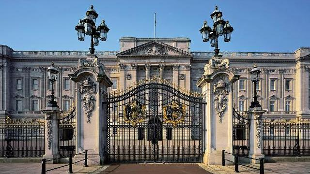

Palatul Buckingham (Buckingham Palace) este resedinta oficiala din Londra a suveranului Regatului Unit al Marii Britanii si Irlandei de Nord si a fost deschis pentru prima pentru publicul larg in anul 1993. Intrarea la Palatul Buckingham se face prin Curtea Ambasadorilor de pe strada Buckingham Palace. Sala Mare a Palatului este locul in care se afla vechea sala de primire la Palatul Buckingham. Aceasta sala este dominata de scarile impozante si de balustrada din bronz cu ornamente florale.
In Camera Garzilor pot fi admirate tapiteriile si ornamentele de pe pereti. Matasea colorata in nuante foarte vii de pe peretii camerei desenelor verzi completeaza perfect frumusetea tavanului sculptat. Acesta este locul in care se afla salonul Reginei Charlotte. Culorile din Camera Trounului sunt dominate de un splendid rosu aprins si auriu. Aici puteti vedea scaunele folosite la incoronarea Majestatii Sale Regina Elisabeta a II-a in anul 1953. Camera de Bal are aproape 40 de metri lungime si a fost inaugurata in timpul domniei Reginei Victoria, in anul 1856 pentru a celebra sfarsitul razboiului din Crimeea.
In colectia de tablouri de la Palatul Buckingham se gasesc comori artistice de Rubens, Rembrandt, Canaletto, Vermeer si multi altii. Aceasta selectie de tablouri din Galeria de Arta a Palatului Buckingham, se gaseste in incredintarea Reginei pentru succesorii ei si pentru natiune si face parte din patrimoniul national al Marii Britanii. In camera destinata dineurilor oficiale, pe pereti se gaseste matase de damasc rosie si pot fi admirate potretele regilor si reginelor de la Regele George al III-lea pana la Regele George al IV-lea. Scaunele de la masa dineurilor oficiale au fost achizitionate de Printul Regent in anul 1813 pentru locuinta sa de la Carlton House.
Istoria Palatului Buckingham a inceput in anul 1702 cand Ducele de Buckingham la construit ca si resedinta a sa in Londra. Fiul Ducelui a vandut Palatul in 1761 lui George al III-lea si a fost redenumit „Casa Reginei” in 1744 deoarece Regina Charlotte a locuit aici. Cand a trecut in posesia lui George al IV-lea in anul 1820, Nash a fost angajat sa redecoreze Palatul. Partea principala a fost pastrata dar o noua aripa de apartamente a fost construita in partea de vest, spre gradina, dubland practic suprafata Palatului Buckingham. Stilul arhitectural care a influentat constructia a fost neo-clasicul francez. Unele camere au ramas neschimabte, fiind amenajate dupa designul original al lui Nash.
Regina Victoria a fost primul monarh care si-a stabilit resedinta in Palatul Buckingham in anul 1837. Si atunci schimbari majore au avut loc. Una dintre aceste modificari a fost inlaturarea portii uriase din marmura care astazi se gaseste in zona numita Tyburn si este cunoscuta sub numele de Arcul de Marmura (Marble Arch).
In zilele noastre, Palatul Buckingham este folosit nu numai ca resedinta pentru Regina si pentru Ducele de Edinburgh dar si pentru treburile administrative ale institutiei monarhice. In apartamentele si salile Palatului, Majestatea Sa primeste vizitele oficiale ale invitatilor la Palat. Pe perioada verii, schimbarea garzilor are loc in fata Palatului Buckingham.